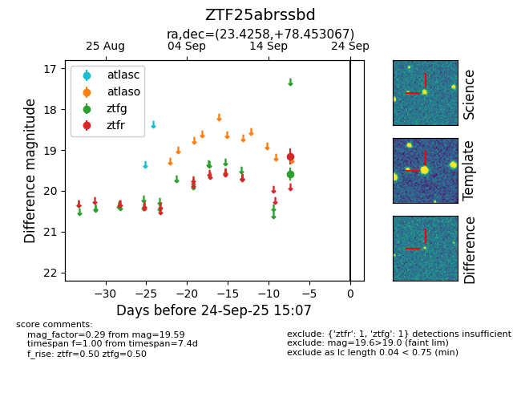

FINK: ZTF25abrssbd
Lasair: ZTF25abrssbd
ALeRCE: ZTF25abrssbd
ZTF25abrssbd (ztf,fink)
equatorial (ra, dec) = (23.4258,+78.45307)
galactic (l, b) = (125.1177,+15.76108)

last ztfg=19.59, ztfr=19.15
1 ztfg, 1 ztfr detections